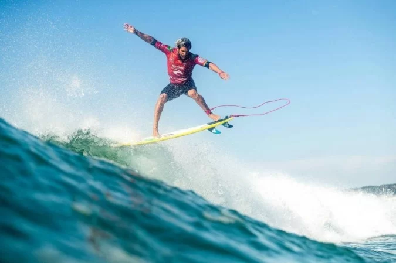
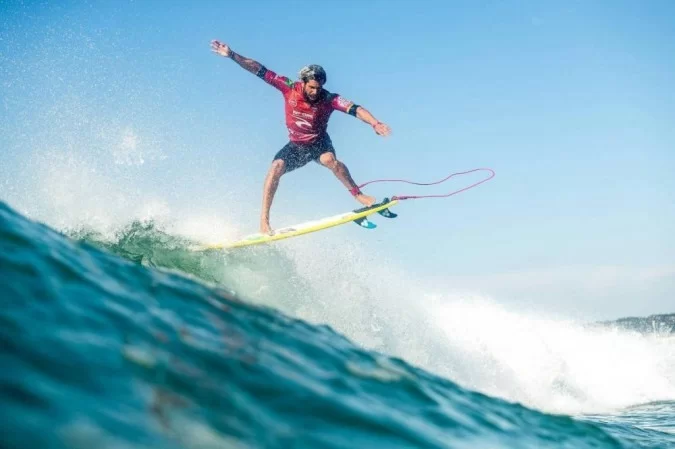
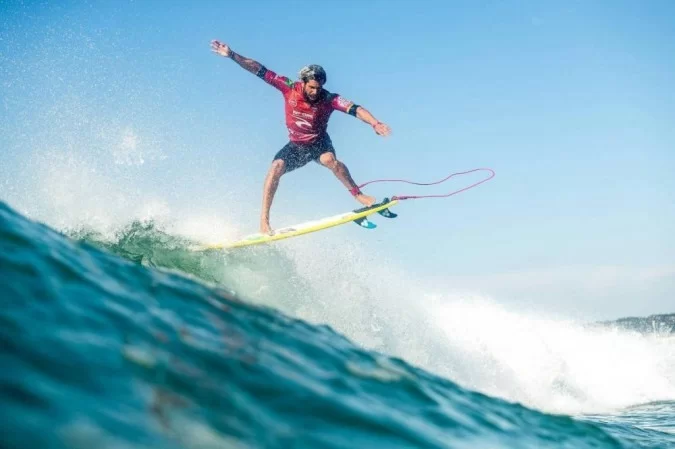
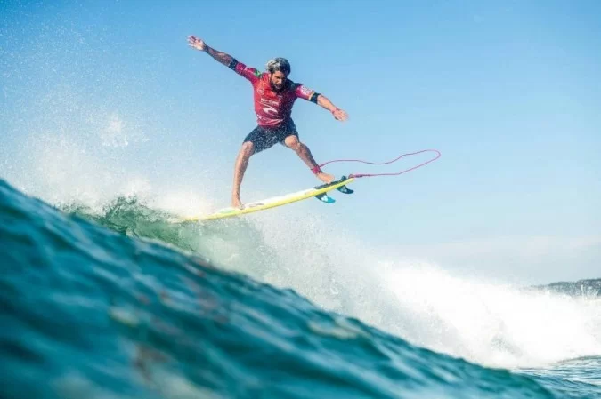

Italo Ferreira abriu bem sua participação na etapa de Sunset Beach do Mundial de Surfe, no Havaí. Nesta terça-feira, o surfista de 27 anos tomou uma virada do havaiano Ezekiel Lau no minuto final, mas superou o havaiano Billy Kemper. Na segunda posição da bateria, o campeão olímpico avançou direto para a terceira rodada juntamente com mais cinco brasileiros: Jadson André, Samuel Pupo, Deivid Silva, João "Chumbinho" Chianca e Filipe Toledo, atual vice-campeão mundial. Após passar pela repescagem, Caio Ibelli também se juntou ao time de brasileiros na próxima etapa.
Logo nos primeiros minutos da bateria, Italo pegou uma onda com uma parede bem esbranquiçada e ainda conseguiu encaixar boas manobras para receber 6,00 pontos. A nota já o colocou como líder da disputa contra os havaianos. O brasileiro teve tranquilidade para pegar muitas ondas e ir aumentando pouco a pouco sua segunda onda até conseguir um 5,67. Somando 11,67 pontos, o campeão olímpico acabou tomando uma virada no último minuto. O cronômetro já havia zerado quando os árbitros anunciaram a nota que deu a vitória a Ezekiel Lau, com 12,43 pontos. À frente dos 9,86 pontos de Billy Kemper, Italo ainda avançou na segunda posição.
Em 2013, um exame antidoping apontou a presença de 16-OH Prednisolone acima dos níveis permitidos. A substância estava em um dos três remédios que a atleta tomava para tratar uma asma. Ela foi suspensa por 60 dias por conta disso. A ponteira conviveu com lesões durante todas as temporadas seguintes. Pouco antes dos Jogos de Tóquio, no ano passado, chegou a fraturar um dedo da mão. Mas se recuperou a tempo de ajudar na campanha que terminou com a prata em Tóquio.
De promessa a capitã da seleção, Natália esteve presente nos últimos três ciclos olímpicos. Além dos Jogos de Londres e de Tóquio, também disputou as Olimpíadas do Rio, quando a seleção caiu nas quartas de final para a China. A ponteira ainda conquistou uma prata e um bronze em Mundiais, em 2010 e 2014, respectivamente.